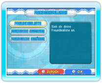

Um über die Nintendo
Wi-Fi Connection mit Freunden spielen zu können, müsst ihr Freundescodes austauschen und registrieren. Wähle NINTENDO WFC und danach FREUNDESEINSTELLUNGEN. Hier kannst du deinen eigenen Freundescode bestätigen und die Freundescodes anderer Spieler registrieren.